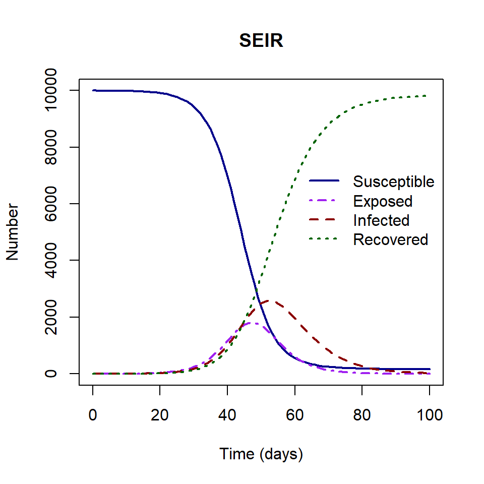
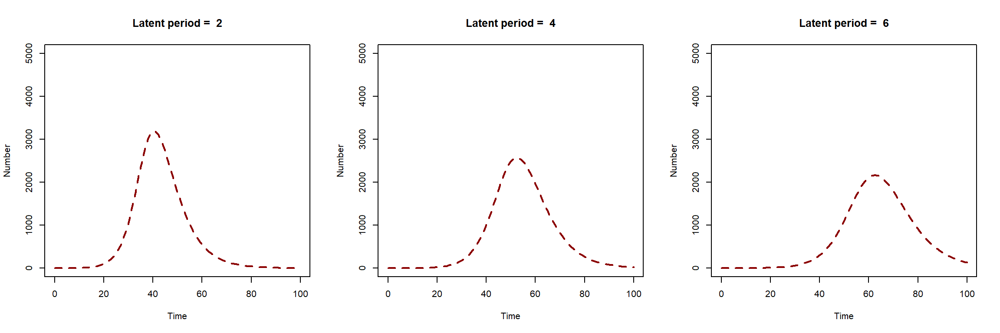
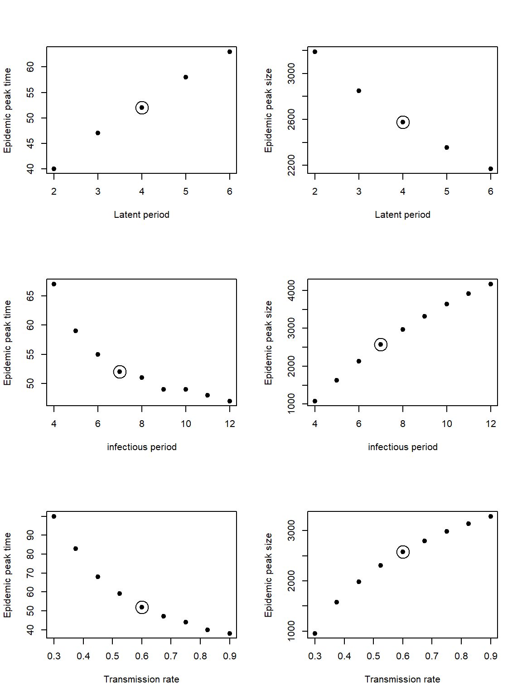

Sensitivity analysis
Deciding which parameters to use, what ranges and what method of sensitivity analysis depends on the question at hand. Here we introduce the concept of sensitivity analysis of infectious disease models. Using the SEIR model, we perform sensitivity analysis of model parameters on their effect on model outcomes epidemic peak time and size using visualisations and PRCC sensitivity analysis.
Setting up
For this example, we will use the SEIR model. The model is described by a system of ordinary differential equations. Individuals move from the \(S\) to the \(E\) state via frequency dependent transmission with transmission rate \(\beta=0.6\). They then move from the exposed state \(E\), to the infectious state \(I\) after the latent period \(1/\sigma=4\) days. Recovery occurs on average after a period of 7 days (\(1/\gamma=7)\).
\[ \begin{aligned} \frac{dS}{dt} & = - \beta S I/N \\ \frac{dE}{dt} &= \beta S I/N - \sigma E \\ \frac{dI}{dt} &= \sigma E - \gamma I \\ \frac{dR}{dt} &=\gamma I \\ \end{aligned} \]
To set up our sensitivity analysis, the are two steps we need to consider:
- Define the outcome that we will measure the effect of.
The SEIR model output gives us the number of individuals in each state \(S\), \(E\), \(I\) and \(R\) through time.
Using this model output we will extract two outcomes of interest:
- the epidemic peak time,
- epidemic peak size.
In the plot above, the epidemic peak time is 52 and the epidemic peak size is 2576.
- Decide what ranges of parameter values to explore
Our parameter ranges must be biologically realistic. For example, we think the infectious period for our study disease could range between 4 and 12 days based on estimates and studies in the published literature. There is no need to explore the infectious periods that are many months or years long, as this would not be appropriate for the disease at hand.
In this example, we will use the following parameter ranges in our sensitivity analysis.
| Parameter | Definition | Range |
|---|---|---|
| \(1/\sigma\) | Latent period | (2,4) |
| \(1/\gamma\) | Infectious period | (4,12) |
| \(\beta\) | Transmission rate | (0.4,0.8) |
Exploring relationships
We will include the latent period (\(1/\sigma\)), the infectious period (\(1/\gamma\)) and the transmission rate (\(\beta\)) in our sensitivity analysis.
Firstly, we will explore the visual changes in our model output when we change parameter values. The first plot below shows how the SEIR model solution changes when we change the value of the latent period (\(1/\sigma\)). As latent period increases, epidemic peak time is pushed forward in time. The epidemic peak size is higher for shorter latent periods.

The plot below shows the epidemic peak size and time for different values of the latent period, infectious period and transmission rate respectively. The circle indicates the fixed value. From this plot we can look at the direction of the relationship and how much the outcome changes. We see that the epidemic peak time increases for longer latent periods, whereas the peak size decreases.
The direction of the relationship between the model outcomes and the infectious period/transmission rate are the same. The epidemic peak time decreases for longer infectious periods and higher transmission rates. Whereas the epidemic peak size increase for longer infectious periods and higher transmission rates.
The plots can be used to infer whether the relationship between the outcome and the parameter is monotonic, which is a requirement for the formal sensitivity analysis in the next section.

We can also use these figures to see which parameter range has the widest range in model outcomes. The biggest range in epidemic peak time is for our given range of transmission rate. Whereas the biggest range in epidemic peak size is for our range of infectious period.
At this point we can ask ourselves do we need a narrower range of values for our results to be meaningful? If we see a very large range of outcome for our parameter ranges, is there any other information we can obtain to narrow what our range of values is.
Formal sensitivity analysis
Visualisations are very useful for understanding model behaviour for our parameter ranges. It is also useful to use methods to quantify the effect of changing input parameters on our outcomes.
Partial rank correlation coefficient (PRCC) provides a measure of correlation between an input parameter and an outcome of interest, while accounting for changes in all other input parameters. It can be used for non-linear relationships, but must the relationships must be monotonic (the gradient remains positive or negative).
PRCC values are between 1 and -1. A value above 0 means positive correlation and value below 0 means a negative correlation. The closer the value to 1, or -1, the stronger the correlation.
See Wu et al. (2013) for details on PRCC formulation.
To perform PRCC in R, we must complete the following steps :
- Simulate a range of parameter values.
We will use Latin hypercube sampling (LHS) is a sampling method that ensures that the whole range of possible values are sampled by ‘remembering’ previous samples. We will use the R package {FME} and function Latinhyper()
- Calculate the outcome of interest for these input parameters
In our example, we must solve the SEIR model for each combination of parameters, then extract the epidemic peak time and size
- Using the parameter ranges and the outputs, calculate the PRCC
In R, we need the R package {sensitivity}. The full R script to perform the PRCC sensitivity analysis is attached as an exercise file to this lesson.
The results of the sensitivity analysis shown in the table below. The PRCC align with our visual check. The plots with a negative relationship resulted in a negative coefficient, and the plots with a positive relationship resulted in a positive coefficient.
set.seed(200)
# Set the ranges of parameters
par_ranges <- data.frame(min = c(2, 4, 0.4),
max = c(4, 12, 0.8))
rownames(par_ranges) <- c("latent_period", "infectious_period", "beta")
# Create the Latin hypercube
n <- 10000
lhs_pars <- as.data.frame(Latinhyper(par_ranges, n))
# Find the outcome of interest for the parameter combinations
times <- seq(from = 0, to = 365, by = 1)
output_time <- matrix(nrow = n, ncol = 1)
output_size <- matrix(nrow = n, ncol = 1)
for (i in 1:n){
# Extract parameters from Latin hypercube
pars <- c(beta = lhs_pars$beta[i],
gamma = 1 / lhs_pars$infectious_period[i],
sigma = 1 / lhs_pars$latent_period[i])
# Find the model solution
solution <- as.data.frame(ode(y = state_var, times = times,
func = SEIR_model, parms = pars,
method = rk4))
# Store the outcomes
output_time[i] <- solution$time[which.max(solution$I)]
output_size[i] <- solution$I[which.max(solution$I)]
}
# Perform sensitivity analysis of the two outcomes
# Specify rank = TRUE to perform PRCC (instead of PCC)
sens_output_time <- pcc(X = lhs_pars, y = output_time, rank = TRUE)
print(sens_output_time)
sens_output_size <- pcc(X = lhs_pars, y = output_size, rank = TRUE)
print(sens_output_size)The largest PRCC are for the infectious period and peak size, and the transmission rate and peak time. Recall that the largest ranges of outcomes were for these combinations of parameter and outcomes.
Summary
Sensitivity analysis is a useful tool in infectious disease modelling to help answer a number of questions:
Is the model behaving the way it should be? Do we need a narrower range of values for our results to be meaningful? What is the strength of the effect and what direction? How would our model results change if we used a different parameter value in our range?
In this example, we included all model parameters in our sensitivity analysis. There will be some cases where not all parameters are included in the sensitivity analysis. If the purpose of the sensitivity analysis is to show the effect of parameters that were altered for an analysis, for example parameters are altered in value to show the effect of interventions (with all other parameters fixed in value). then a sensitivity analysis of subset of the parameters would be suitable.
There are other formal methods of sensitivity analysis besides PRCC. For example, Sobol indices is a variance based sensitivity analysis which calculates sensitivity ‘indices’ by dividing up the variance of the output of a function into fractions to be attributed to inputs (Wu et al. (2013).
References
Wu, Jianyong, Radhika Dhingra, Manoj Gambhir, and Justin V. Remais. “Sensitivity analysis of infectious disease models: methods, advances and their application.” Journal of The Royal Society Interface 10, no. 86 (2013): 20121018.